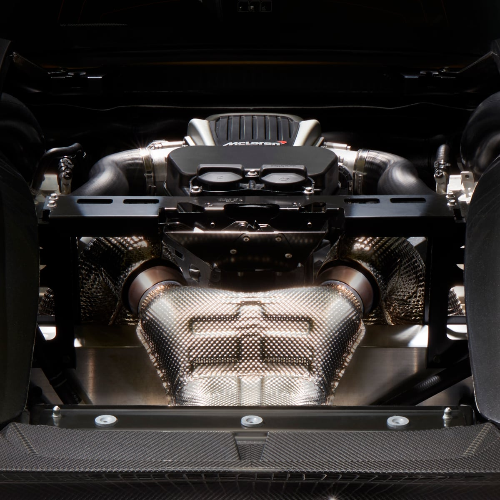

3.2s
9.5s
10.9s
328 km/h (204 MPH)
31 m (102 ft)
126 m (413 ft)
Carbon Fibre Monocell II
Double Wishbone, Adaptive Dampers
Open Differential with Brake Steer
Carbon Ceramic Brakes with 6-Piston Aluminium Callipers Front and 4-Piston Aluminium Callipers Rear
Static
The first model in McLaren's Sports Series, the McLaren 570S's race-bred dynamics give it a thrilling acceleration of 0-100 kph (0-62 mph) in 3.2 seconds. With a 3.8-litre twin turbo V8 engine, delivering 570 PS (562 bhp) in power, its performance is nothing short of breathtaking.
The McLaren 570S's stunning exterior is the result of extensive aerodynamic engineering. The shrink-wrapped aluminium body panels and teardrop-shaped cockpit reduce drag resistance. Inspired by the McLaren P1 hypercar, its slimline light blade LED taillights accentuate an expanse of open mesh for enhanced engine cooling and a technical appearance. The outcome: a truly exquisite design.

The McLaren 570S delivers a driving experience that feels almost telepathic in responsiveness. Adaptive dampers and anti-roll bars are paired with a double wishbone suspension that make the car responsive to every driver input.
Brake Steer technology further enhances its handling by subtly applying a braking force to the inside wheels during cornering for peerless agility. The McLaren 570S immerses drivers in the experience, connecting them to the road and engaging their senses completely.
This is for educational purposes only